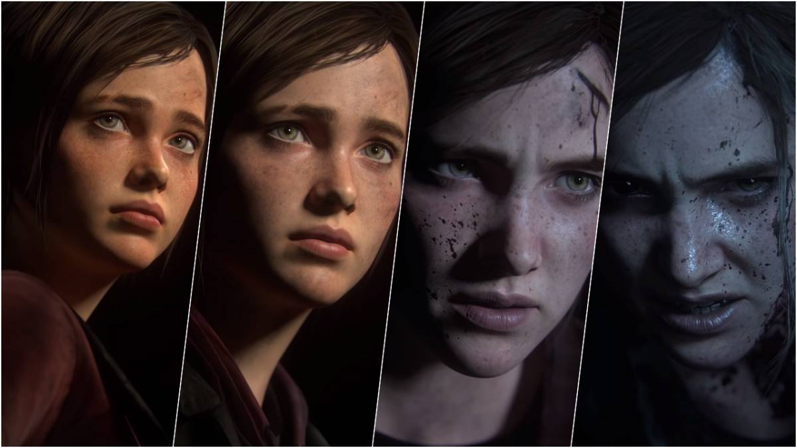

Joel
Joel is a major character and the playable protagonist of The Last of Us, the deuteragonist of The Last of Us Part II, and a supporting character in The Last of Us: Left Behind. Joel is a survivor in post-apocalyptic America that has been ravaged by the cordyceps brain infection, which has decimated 60% of mankind globally. After losing his only daughter Sarah in the early stages of the outbreak, Joel becomes a ruthless and cynical smuggler eventually tasked with smuggling and protecting Ellie, a young girl who is the key to mankind's survival. Joel eventually comes to form a strong bond with her. He is voiced and motion captured by Troy Baker.
Ellie
Ellie is the deuteragonist of The Last of Us, the playable protagonist of The Last of Us Part II[3] and The Last of Us: Left Behind, and the main character in The Last of Us: American Dreams. A nineteen-year-old survivor, Ellie is "mature beyond her years" as a result of the circumstances of her environment.[4] She is voiced and motion captured by Ashley Johnson.